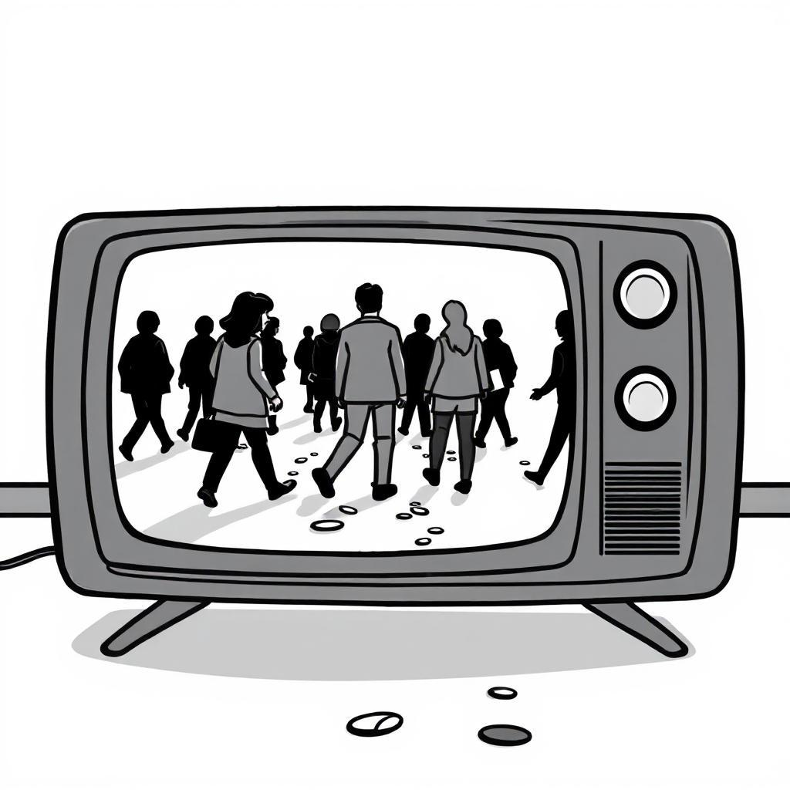
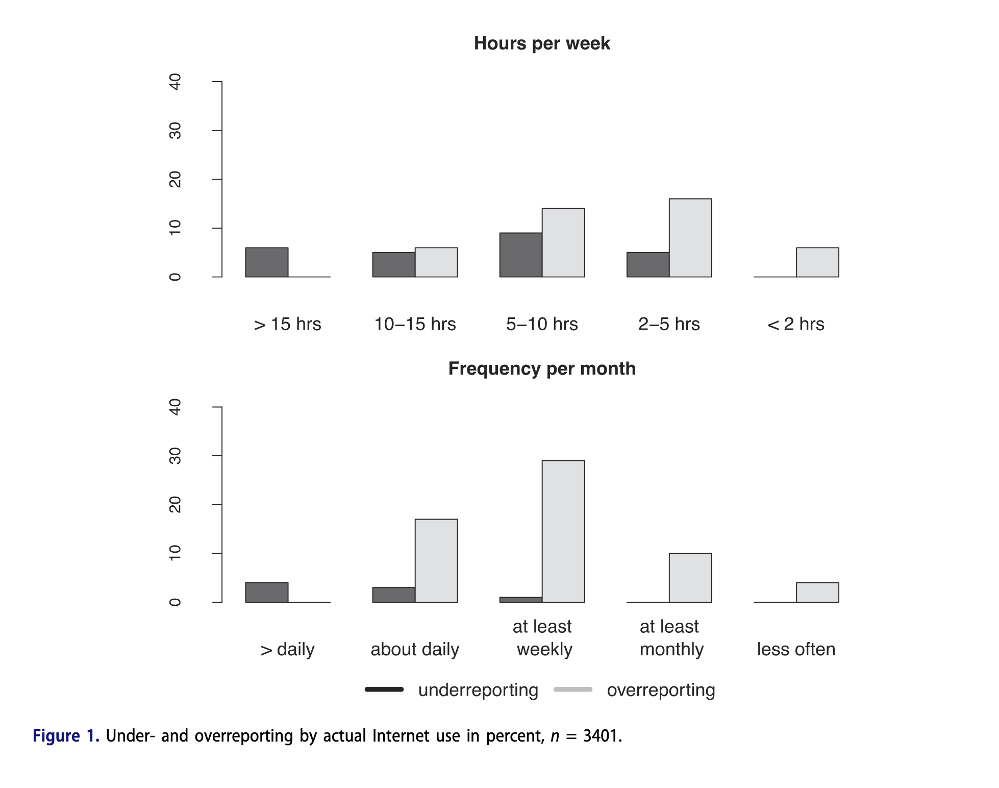
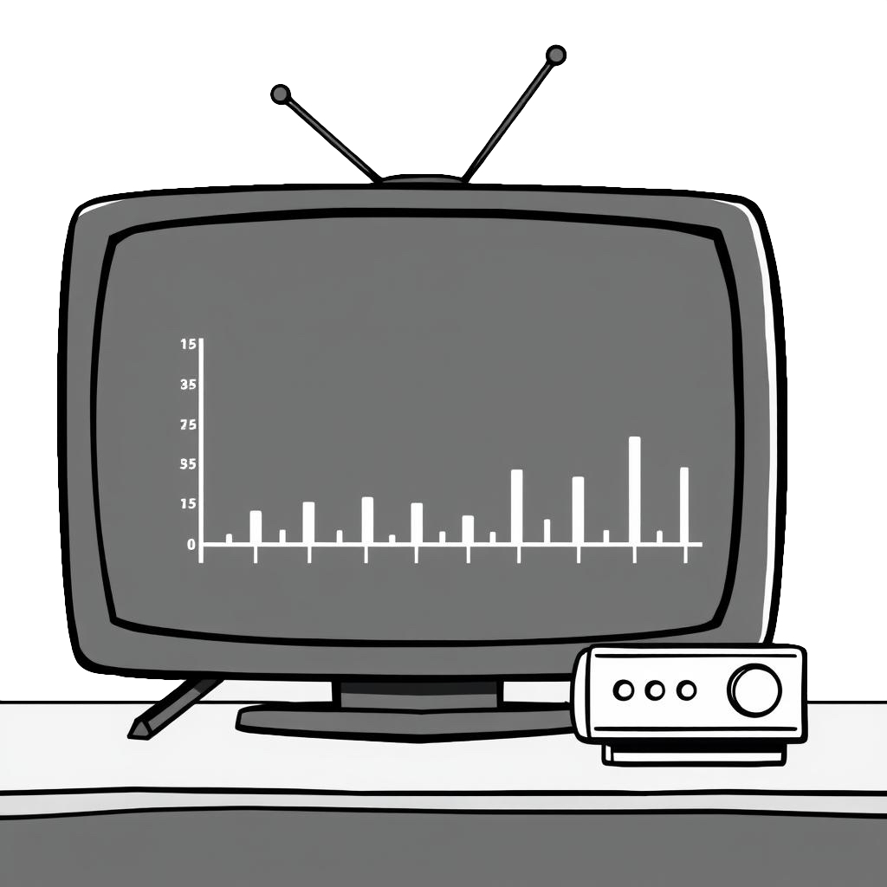
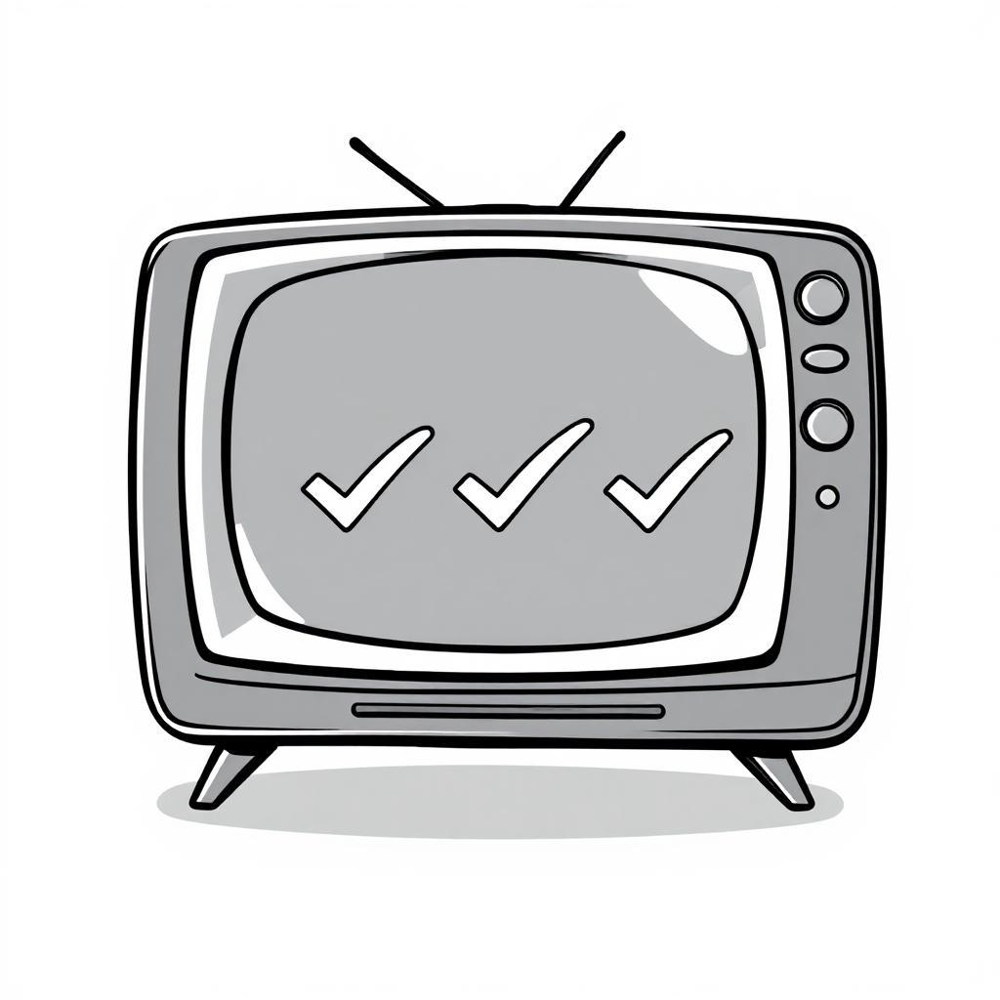
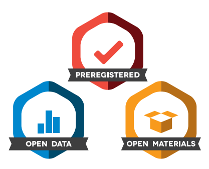
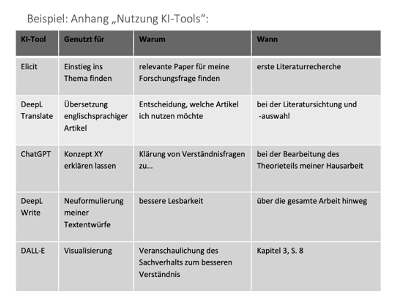

BA Befragung: Mediennutzung & -effekte
Mediennutzung zur Unterhaltung
Johannes Gutenberg-Universität Mainz
BA Befragung: Mediennutzung & -effekte KF C
Sommersemester 2025
Willkommen!
- Sie können horizontal durch die Sitzungen und vertikal innerhalb der Sitzungen navigieren
- Verwenden Sie die Pfeiltasten
- Verwenden Sie “M”, um das Menü zu öffnen
- Die Kurs-Website und alle Folien finden Sie unter https://felixdidi.github.io/25-1-be
- Drücken Sie
?auf Ihrer Tastatur, um mehr darüber zu erfahren, wie Sie durch die Folien navigieren können!
Sitzung 01: Einführung & Theoretische Grundlagen

Ressourcen für diese Sitzung
Zum Einstieg…
Bitte aufschreiben… so, dass Sie diese Notizen nächste Woche noch wiederfinden können
Wie lange benutzen Sie AM TAG YouTube?
Antwort: Eine exakte, gerade Zahl in Minuten, z.B. 10 Minuten oder 84 Minuten
Wie lange benutzen Sie IN DER WOCHE YouTube?
Antwort: Eine exakte, gerade Zahl in Minuten, z.B. 10 Minuten oder 84 Minuten
Wie häufig benutzen Sie YouTube?
Antwort eine von:
- nie
- einmal in der Woche
- mehrmals in der Woche
- täglich
- mehrmals täglich
Auswertung


Los geht’s!
Welche sind die wichtigsten Fragen, die in dieser Sitzung beantwortet werden sollen?
- Worum geht es in diesem Kurs?
- Was werde ich lernen?
- Was werde ich tun (müssen)?
Kurs-Website
- Verfügbar unter https://felixdidi.github.io/25-1-be
- Bitte nach dieser Sitzung im Detail ansehen
Kursmaterial
- Wird über die Kurs-Website (und Moodle) bereitgestellt
- Bitte prüfen Sie, ob Sie Zugang zur Moodle-Plattform haben
- Sie sollten automatisch zum Moodle-Kurs hinzugefügt werden
- Wenn Sie bis Ende dieser Woche keinen Zugang haben, schreiben Sie bitte eine E-Mail
Vorstellungsrunde

Über Felix
- Doktorand & wiss. Mitarbeiter
am Fachbereich Medienpsychologie
JGU Mainz
Meine Forschungsinteressen umfassen:
- Rezeption und Wirkung von Unterhaltungsmedien
- Algorithmische Kuratierung von Medieninhalten
- Digitale Autonomie & mentale Gesundheit
- Open & Computational Communication Science
Und Sie?
- Wie ist Ihr Name?
- Was ist Ihr Haupt- und Nebenfach?
- Hatten Sie im Studium schonmal Kontakt mit Forschung zu Unterhaltungsmedien? Wie groß ist Ihr Interesse an computergestützten Analysemethoden?
Worum geht es in diesem Kurs?
Unterhaltungserleben: Klassische Definition
In der kommunikationswissenschaftlichen Unterhaltungsforschung wird Medienunterhaltung meist als Rezeptionsphänomen definiert:
Unterhaltung ist, was Rezipienten als unterhaltsam wahrnehmen
Bosshart & Macconi (1998)
Traditionell wird das Unterhaltungserleben als angenehmer und positiver Erlebenszustand beschrieben:
“enjoyment typically has been defined using terms associated with pleasure and measured as a positive emotional reaction to content”
Raney & Bryant (2019, S. 324)
Die klassischen Definitionen des Unterhaltungserlebens nehmen somit eine rein hedonische Sichtweise ein: Unterhaltungserleben ist das reine Vergnügen an der Medienrezeption
Problem: Die rein hedonische Perspektive klassischer Unterhaltungstheorien vernachlässigt die Rezeption von Stimuli, die zunächst zu aversiven Reaktionen führen
Aktuelle Ansätze zum Unterhaltungserleben: Zwei-Prozess-Modelle
Neuere Zwei-Prozess-Modelle des Unterhaltungserlebens berücksichtigen auch die non-hedonische Seite der Medienunterhaltung
- Menschen streben nicht (nur) nach hedonischem Glück, sondern nach psychologischem Wachstum (Self-Determination Theory, Ryan & Deci, 2000)
- Grundlegende psych. Bedürfnisse:
- Kompetenz
- Autonomie
- Soziale Verbundenheit
- Mediennutzung orientiert sich an diesen Bedürfnissen (bspw. Tamborini et al., 2011)
- Statt Streben nach Unterhaltung, Suche nach “Meaningful Entertainment” (Oliver & Raney, 2011)
- Form des Genusses von Medien auf höherer kognitiver Ebene
- Wird empfunden bei:
- Moralischer/ästhetischer Schönheit
- Erinnerung an die eigene Endlichkeit und den Sinn des Lebens
Warum forschen wir dazu?
Psychologisches Wohlbefinden
“Optimal psychological functioning and experience”
Ryan & Deci (2001, p. 142)
- Fokus auf Glück und Lebenszufriedenheit
- Erreichen von Freude (positiver Affekt)
- Schmerzvermeidung (Vermeidung von negativem Affekt)
- Manchmal auch subjektives Wohlbefinden genannt
- Fokus auf volle Funktionsfähigkeit
- Bedeutsamkeit / Sinn (Meaning)
- Selbstverwirklichung
Zwei-Kontinua-Modelle der psychischen Gesundheit
im Zusammenhang mit computervermittelter Kommunikation, siehe Meier & Reinecke (2021)
- Psychische Erkrankung
- Persönliches Leiden
- Beeinträchtigung der Lebensfunktionen
- Dysfunktion
- Glück und Lebenszufriedenheit
- Persönliches Wachstum
- Entfaltung und Lebensqualität
Woher wissen wir, ob das alles stimmt? Wie können wir das überprüfen?
Empirische Wissenschaft
- Empirische Wissenschaft ist die systematische, intersubjektiv nachprüfbare Sammlung, Kontrolle und Kritik von Erfahrungen
- Den Ausgangspunkt der Forschung bildet eine Frage, eine Vorstellung bzw. Vermutung über reale Sachverhalte, also etwas Gedachtes, ein Begriff bzw. ein Problem
- Es folgt der Versuch einer theoretischen Erklärung in Form von Hypothesen oder Theorien
- Im dritten Schritt sind dann diese theoretischen Erklärungsversuche durch den Einsatz bestimmter Methoden zu überprüfen, indem sie an konkreten, erfahrbaren Sachverhalten getestet werden
- Ziel empirischer Forschung ist: (a) Beschreibung, (b) Erklärung und/oder (c) Prognose
Früh (2001, S. 19)
Ablaufplan: Von der Idee zur Antwort

Methoden der Kommunikationswissenschaft

Brosius et al. (2016)
Definitionen quantitative Befragung
“Die nebeneinander gebrauchten Begriffe Umfrageforschung und Demoskopie bezeichnen eine statistisch-psychologische Untersuchungsmethode, mit der gesellschaftliche Massenerscheinungen beobachtet und analysiert werden können.”
Noelle-Neumann & Petersen (2005, S. 619)
“Die standardisierte Befragung ist eine besondere Form der geplanten Kommunikation, die auf einem Fragebogen basiert. Ihr Ziel ist es, zahlreiche individuelle Antworten zu generieren, die in ihrer Gesamtheit zur Klärung einer Fragestellung beitragen.”
Möhring & Schlütz (2010, S. 14)
Befragungsmodi

Entscheidung für einen Modus
Welcher Befragungsmodus besser geeignet ist, hängt davon ab…
- was das Befragungsziel ist,
- wer befragt werden soll und welcher Grad an Repräsentativität erforderlich ist,
- was das Befragungsthema ist,
- wie schnell es gehen muss,
- wie viel Geld und Ressourcen man zur Verfügung hat
Was werde ich lernen?
Was werde ich lernen?
Expertise
- Forschung zur digitalen Mediennutzung, Fokus auf Unterhaltungsmediennutzung
- Kompetenz zum kritischen Umgang mit Forschungsergebnissen, besonders Befragungen
Methodische Kompetenz
- Entwicklung empirischer Forschungsdesigns als Befragungsdesign (Schwerpunkt Computational Communication Science)
- Durchführung und Dokumentation von Datenanalyse und Reflexion der methodischen Grenzen
Persönliche Kompetenz
- Problemlösungskompetenz bei forschungsorientierten Aufgaben
- Übertragung des Wissens auf ähnliche Fragestellungen
Was muss ich tun?
Was muss ich tun?
Seminar-Sitzungen
- Nehmen Sie an den Seminar-Sitzungen teil
Leseaufgaben & Lernvideos (siehe “Vorbereitung” im Seminarplan)
- Lesen Sie die bereitgestellte Literatur, um sich auf eine Seminar-Sitzung vorzubereiten
- Orientieren Sie sich bei der Lektüre an den Fragen, die am Ende der letzten Sitzung gestellt wurden
- Schauen Sie die bereitgestellten Lernvideos und stellen Sie Fragen dazu
Wie man liest und wie man nicht lesen sollte?
- Lesen Sie wissenschaftliche Literatur nicht wie einen Roman
- Beginnen Sie mit Titel, Zusammenfassung und Zwischenüberschriften, um einen ersten Eindruck zu gewinnen
- Wenn Sie digital lesen, suchen Sie nach Schlüsselwörtern
- Überlegen Sie: “Was will ich von diesem Text?”
- Beantworten Sie Ihre eigenen Fragen (ich werde auch einige stellen)
Was muss ich tun?
Keine Anwesenheitspflicht bedeutet…
- Sie erhalten alle grundlegenden Informationen im LMS und auf der Kurswebseite
- Sie können viele Kursinhalte selbständig vor- und nachbereiten
- Ein Teil der Aufgaben wird auf nicht-Präsenz-Zeiten verlagert
- Sie sind selbst verantwortlich, alle Inhalte aufzunehmen und alle zentralen Abgaben/Aufgaben/Voraussetzungen für die aktive Teilnahme zu erfüllen/im Blick zu behalten
- Wenn Sie nicht anwesend sind, es aber Gruppenarbeiten gibt, sind Sie selbst dafür verantwortlich, sich im Sinne der Gruppe einzubringen
- Gerade bei empirischen Kursen gibt es viele essenzielle Sitzungen, die direkt an den Erfolg in diesem Kurs geknüpft sind, d.h. kein Abschlussbericht ohne regelmäßige Anwesenheit oder sehr hohes Maß an eigenständiger Nachbereitung
Was muss ich tun?
Arbeit in den Arbeitsgruppen
- Gruppenarbeit im Seminar: ca. 4 Studierende pro Gruppe
- Maximal 5 Arbeitsgruppen im Seminar
- Prinzip: “Learning by doing”
- Studierende sammeln praktische Erfahrungen in Arbeitsgruppen (AGs)
- Austausch mit anderen AGs: Kennenlernen von Methoden, Themen und Arbeitsweisen
- Feedback geben und erhalten: zur eigenen und zu anderer AG-Arbeit
Diverse Aufgaben (nicht benotet)
- Dienen dem Projektfortschritt und sind von allen Kursteilnehmer:innen zu erbringen
Was muss ich tun?
| Anforderung | Abgabe | Deadline |
|---|---|---|
| Aktive Teilnahme an Diskussionen und Gruppenarbeiten im Kurs | Fortlaufend | |
| Sitzungsvorbereitung durch Literatur-Lektüre & -Recherche | Fortlaufend | |
| Einreichen von jeweils einer Verständnis- oder Diskussionsfrage zu den Videos | E-Mail an den Dozenten | Dienstag vor der jeweiligen Sitzung (22.04. & 06.05.), 23:59 Uhr |
| Individuelle Abgabe einer vorläufigen Problemstellung/übergeordneten Frage für das Forschungsprojekt | E-Mail an den Dozenten | Sonntag, 27.04., 23:59 Uhr |
| Individuelle Abgabe einer überarbeiteten Problemstellung/übergeordneten Frage für das Forschungsprojekt | E-Mail an den Dozenten | Sonntag, 11.05., 23:59 Uhr |
Was muss ich tun?
| Anforderung | Abgabe | Deadline |
|---|---|---|
| Gruppen-Abgabe eines Proposals für das Forschungsprojekt | E-Mail an den Dozenten | Sonntag, 18.05., 23:59 Uhr |
| Gruppen-Abgabe der (vorläufigen) Präregistrierung für das Forschungsprojekt | E-Mail an den Dozenten | Sonntag, 18.05., 23:59 Uhr |
| Pretest des Fragebogens & Rekrutierung von Studienteilnehmenden | Donnerstag, 05.06., 16:15 Uhr | |
| Abschlusspräsentation | E-Mail an den Dozenten | Abgabe Dienstag, 15.07., 23:59 Uhr, Präsentation Donnerstag, 17.07., 16:15 Uhr |
Was muss ich tun?
Benotete Leistung (“Prüfungsleistung”)
- Informationen auf der Kurswebsite & in der letzten Sitzung
Seminarübersicht
Theoretische Grundlagen & Empirische Umsetzung
| Datum | Thema | Ziele |
|---|---|---|
| 17.04.25 | Einführung, Organisation & Theoretische Grundlagen | |
| 24.04.25 | Digitale Verhaltensdaten* | |
| 01.05.25 | Keine Sitzung: Feiertag | |
| 08.05.25 | Situative Befragungsdesigns* | |
| 15.05.25 | Open Science | |
| 22.05.25 | Projekt-Sitzung | Präregistrierung |
| 29.05.25 | Keine Sitzung: Feiertag | Pretest |
| 05.06.25 | Projekt-Sitzung | Fragebogen |
| 12.06.25 | Keine Sitzung: Dienstreise | Feldphase |
| 19.06.25 | Keine Sitzung: Feiertag | Feldphase |
Seminarübersicht
Auswertung & Aufbereitung
| Datum | Thema | Ziele |
|---|---|---|
| 26.06.25 | Datenaufbereitung* | |
| 03.07.25 | Hypothesentests | |
| 10.07.25 | Projekt-Sitzung | |
| 17.07.25 | Semesterabschluss und Informationen zum Projektbericht | Projekt-Präsentation |
| 01.09.25 | Einreichungsfrist für Hausarbeiten |
Hinweis: Die Seminarstruktur kann an die individuellen Bedürfnisse und Interessen der Projektgruppen angepasst werden. Sitzungen, die mit einem Sternchen markiert sind, qualifizieren anteilig für den Computional Methods Track.
Allgemeine Literatur
Siehe Kurswebseite
Soweit Fragen?
Vorbereitung auf die kommende Sitzung
Siehe Vorbereitung Sitzung 2:
Lernvideos anschauen, Fragen einreichen, Literatur lesen, YouTube Takeout-Daten anfragen
Sitzung 02: Digitale Verhaltensdaten

Agenda
- Befragung: Recap
- Video 1 (Befragungsdesigns)
- Video 2 (Theoretische Konzeption & Forschungsinteresse)
- CCS: Digitale Verhaltensdaten
- Forschungsprojekt: Ideen “Speed-Dating”
Seminarübersicht & anstehende Deadlines
| Datum | Thema | Ziele |
|---|---|---|
| 17.04.25 | Einführung, Organisation & Theoretische Grundlagen | |
| 24.04.25 | Digitale Verhaltensdaten* | |
| 01.05.25 | Keine Sitzung: Feiertag | |
| 08.05.25 | Situative Befragungsdesigns* |
| Anforderung | Abgabe | Deadline |
|---|---|---|
| Einreichen von jeweils einer Verständnis- oder Diskussionsfrage zu den Videos | E-Mail an den Dozenten | Dienstag vor der jeweiligen Sitzung (22.04. & 06.05.), 23:59 Uhr |
| Individuelle Abgabe einer vorläufigen Problemstellung/übergeordneten Frage für das Forschungsprojekt | E-Mail an den Dozenten | Sonntag, 27.04., 23:59 Uhr |
Befragungsdesigns
- Wozu brauchen wir Split-Ballot Befragungen?
- Wie verhält es sich mit Panelbefragungen und Kausalität?
- Warum machen wir nicht immer (intensive) Längsschnittbefragungen?
- Kosten
- Panelmortalität
- Ab welchem Grad der Manipulation kann von einem experimentellen Befragungsdesign gesprochen werden?
Bitte schalten Sie auch das nächste Mal wieder ein, wenn es heißt…
- Wie wähle ich das richte Befragungsdesign aus?
- Fragenformulierung / Fragebogenaufbau
- Besonderheiten von intensiven Längsschnittdesigns
- Vermeidung von fragwürdigen Forschungspraktiken
- Auswertung / Hypothesenprüfung
Theoretische Konzeption & Forschungsinteresse
- Macht es Sinn eine ungerichtete Recherche durchzuführen? Kostet das nicht zu viel Zeit?
- Kann man Unterschiedshypothesen mit Befragungen ohne Experimentaldesign überprüfen?
- Was genau ist der Unterschied zwischen einer konfirmatorischen Befragungshypothese und einer explorativen Forschungsfrage?
- Was sind Richtlinien für ethische Befragungsstudien?
- Was ist der Unterschied zwischen einer “Theorie”, einem “Ansatz” und dem “Theoretischen Konzept/Konstrukt”?
Noch Fragen?
CCS & Digitale Verhaltensdaten
Vergleichen Sie Ihre in der letzten Woche notierte Bildschirmzeit mit den Angaben in der “Screentime”-Rubrik Ihres Smartphones
- Wie groß sind die Abweichungen vom geschätzten Wert?
- Wie lassen sich Abweichungen erklären?
Die Grenzen von Selbstauskunft
- Selbstauskünfte für kleinteilige und stark fragmentierte Mediennutzung werden vermehrt als verzerrt identifiziert
- Über- vs. Unterschätzen von Bildschirmzeit an PCs und Mobiltelefonen
- Biases wie soziale Erwünschtheit, und/oder verfälschtes Erinnerungsvermögen (= “Recall Bias”)
- Verzerrungen werden im Kontrast zu aufgezeichneten digitalen Daten sichtbar
z.B. Scharkow (2016)

Sinnvolle Fragen & CCS
basierend auf Jungherr & Theocharis (2017)
- Nutzung neuer Daten, um bestehende Theorien zu überprüfen, aber vor allem, um neue Theorien zu entwickeln, die auf neuen Erkenntnissen beruhen, die mit den bisherigen Forschungsinstrumenten nicht hätten gewonnen werden können
- Entwicklung neuer Konzepte und Messmethoden, die uns in Kombination dabei helfen können, besser zu verstehen, wie die von dieser neuen Datenquelle erfassten Einstellungen und Verhaltensweisen nicht nur auf größere Phänomene, sondern auch auf unser bestehendes Verständnis abgebildet werden, wodurch klarer wird, welche Schlüsse wir bei der Untersuchung komplexer sozialer und politischer Prozesse ziehen können - und welche nicht.
- Unsere erkenntnistheoretischen Instrumente und Methoden neu bewerten und durch interdisziplinäre Zusammenarbeit neu abstimmen, so dass sie synergisieren, anstatt miteinander zu konkurrieren
- Sicherstellen, dass das gesamte Forschungsprogramm im Einklang mit wissenschaftlichen Werten, Ethik und Praktiken steht
Zugang zu digitalen Verhaltensdaten
- Aufdringliche vs. unaufdringliche Datenerhebungen unterscheiden sich anhand des Aufwandes, den die Teilnehmer:innen aufwenden müssen, um die Daten bereitzustellen
- Plattformzentrierte vs. nutzer:innenzentrierte Ansätze unterscheiden sich anhand der Einwilligungsmöglichkeit der Teilnehmer:innen
- Bewertung und Erwartung an Datensammlung ist abhängig
- von der Plattform/Webseite/App, von der man die digitalen Verhaltensdaten sammeln möchte sowie
- von der Methode der Erhebung digitaler Verhaltensdaten
Zugang zu digitalen Verhaltensdaten
Scraping
- Unauthorisiertes Scraping:
- “automatically extracting the content of web pages” (Freelon, 2018, S. 666)
- fortgeschrittene Kenntnisse notwendig
- fehleranfällig und fragil
- Authorisiertes Scraping mit APIs (application programming interfaces):
- “essentially platform-specific pipelines for obtaining machine-readable digital data” (Ohme et al., 2024, S. 127)
- API-Zugriff = kontrolliertes Scraping mit bereitgestelltem “Schlüssel”
- Nur öffentliche Nutzungsdaten verfügbar
- We are living in an APIpocalypse (z.B. Freelon, 2018)
Zugang zu digitalen Verhaltensdaten
Datenspenden (Data Donations)
- “A user-centric approach in which research participants donate their existing DTD [digital trace data] to researchers” (Ohme et al., 2024, S. 128)
- Durch Regelungen der DSGVO, Artikel 15.1 haben alle Nutzenden das Recht, auf Ihre persönlichen Daten auf einer Plattform zuzugreifen
- In der Realität machen es die Unternehmen ihren Nutzenden nicht gerade einfach, an diese Daten zu gelangen und diese leicht verständlich zu lesen
- Akademische Forschung versucht Workflows zu etablieren, um den Download von Datenspenden für die Wissenschaft zu erleichtern
Zugang zu digitalen Verhaltensdaten
Tracking
- “A user-centric method approach in which behavioral information is automatically captured, most often from individuals and in close temporal succession to the actual behavior, with the help of clientside tracking software” (Ohme et al., 2024, S. 128–129)
- Formen des Trackings (Auswahl, Christner et al., 2022)
- Smartphone Logs, um besuchte URLs im Web aufzuzeichnen oder das Öffnen und Schließen von Apps (z.B. ESM-Apps)
- Browser-Erweiterungen, um besuchte URLs und Inhalte zu sehen, die im jeweiligen Browser angesehen wurden
- Screencapture/Screenomics, für In-App Browsing Inhalte
- Auch: Screenrecordings als Work-around
Potenziale und Herausforderungen
- Welche Potenziale und welche Herausforderungen sehen Sie in Bezug auf digitale Verhaltensdaten?
- Besprechen Sie sich zu zweit oder zu dritt zu diesen Fragen. Nach sieben Minuten sammeln wir Ihre Antworten im Plenum.
Übersicht: Digitale Verhaltensdaten
Potenziale digitaler Verhaltensdaten
- Daten werden in großen Mengen und hoher Geschwindigkeit generiert
- Direkte Erfassung von (Online-)Verhalten
- Je nach Zugang ggf. geringere Kosten als Befragungen
- Einsatz besonders vorteilhaft bei Themen bzw. Untersuchungen…
- …für die es schwierig ist, Studienteilnehmer:innen zu rekrutieren
- …bei denen Beobachtungen vorteilhafter sind als Befragungen
siehe auch Freelon (2018); Lazer et al. (2021); Olteanu et al. (2019); Sen et al. (2021)
Herausforderungen digitaler Verhaltensdaten
Methodisch/forschungspraktisch
- “New digital divides” (Mahrt & Scharkow, 2013) & diverse Biases (Sen et al., 2021)
- z.B. durch Plattform-Algorithmen
- Über wen kann ich durch die jeweiligen digitalen Verhaltensdaten Aussagen treffen?
- Sehr große und oft zunächst schwer durchschaubare Datensätze: Know-how notwendig!
- Messung psychologischer Variablen (Kognitionen, Emotionen oder Einstellungen) nur eingeschränkt möglich (nur sichtbare Verhaltensspuren)
- Kaum bis keine Informationen über mediale Offline-Aktivitäten
- Datenzugang von Unwägbarkeiten und Unsicherheiten geprägt und oft vom „Goodwill“ großer Konzerne abhängig (v.a. im Falle von APIs)
- Geringe Reproduzierbarkeit, Unvollständigkeit, oft auch Ambiguität in den Meta-Daten
siehe auch Freelon (2018); Lazer et al. (2021); Olteanu et al. (2019); Sen et al. (2021)
Herausforderungen digitaler Verhaltensdaten
Rechtliche und ethische Herausforderungen
- Schutz der Privatsphäre von Nutzenden durch Anonymität/Pseudonymität
- große Datensätze ≠ anonyme Datensätze
- Implikationen für Open Science: Teilen von Daten nur möglich, wenn sie so anonymisiert sind, dass sie nicht von Dritten missbraucht, zweckentfremdet oder de-anonymisiert werden können
- Beispiel: Ein einzelner Kommentar unter einem Tweet, der mit einer TweetURL im Datensatz hinterlegt ist, kann auf den Absender zurückverfolgt werden, sofern der Tweet öffentlich und noch online ist
Daher: Prüfung der Vorteile und Risiken durch Forschung für Nutzende strikt abwägen, Datensparsamkeit (nur das erheben, was wirklich notwendig ist), ggf. beim Teilen der Daten aggregieren
siehe auch Olteanu et al. (2019); Van Atteveldt et al. (2021)
Digitale Verhaltensdaten (Ohme et al., 2024)
| API Data | Data Donations | Tracking | |
|---|---|---|---|
| User- vs. platform centrality | Platform | User | User |
| Definition | Official data pipelines that offer different data types depending on the platform | Donation of existing digital traces with informed consent | Client-side tracking software that is installed with informed consent |
| Time frame of collected data | Retrospective | Retrospective (collects existing digital trace data) | Prospective (tracks digital traces as they are produced) |
| Consent of participants | No | Yes | Yes |
| Type of user involvement | None | Donate existing data to science | Generate data for science |
Digitale Verhaltensdaten (Ohme et al., 2024)
| API Data | Data Donations | Tracking | |
|---|---|---|---|
| Potential for reactivity/social desirability biases | Low | Low | Medium to high |
| Reliance on third-party platform | High | Medium | Low to Medium (No, if researcher-developed) |
| Transparency to review DTD by user | Low | High | Medium |
| Level of gathered content | (Mostly) Aggregate-level data | Individual-level data | Individual-level data |
Digitale Verhaltensdaten (Ohme et al., 2024)
| API Data | Data Donations | Tracking | |
|---|---|---|---|
| Types of data | Includes published and public data from digital platforms | Includes non- or semi-public user data and data not visible to user (e.g., profiling, etc.) | Includes (mostly nonpublic) behavioral sequence data (e.g., click streams, screenshots, etc.) |
| Measurement unit | User Content | Account | Device |
| Predictability of content included in collected data | High | Medium | Low |
| Privacy risks in the collection of personally identifiable information | Medium to high | High | Very high |
Digitale Verhaltensdaten (Ohme et al., 2024)
| API Data | Data Donations | Tracking | |
|---|---|---|---|
| Examples | OSD2F, PORT, Webhistorian, PIEGraph | Screenomics-App, ScreenLife-AppCommercial companies such as Netquest and Comscore |
Für Google API, siehe heutige Übungsaufgabe
Für Data Donations, siehe z.B.: https://datadonation.eu
Für Screenomics, siehe z.B.: https://screenomics.stanford.edu
“The Human Screenome”
Screenshots alle 5 Sekunden bei aktiviertem Bildschirm
Kurze Pause
Im Anschluss: Übungsaufgabe zu digitalen Verhaltensdaten
Übungsaufgabe: Digitale Verhaltensdaten
Forschungsinteresse: Zielsetzungen
Zielsetzungen für empirische Studien (DeAndrea & Holbert, 2017)
- Beschreibung, Beobachtung, Hypothesengenerierung
- bildet Grundlage für Theoriebildung
- Adressierung konzeptueller Angelegenheiten (z.B. durch verbesserte Definition und Messung von Konstrukten)
- Replikation einer Studie
- Erweiterung des Rahmens bestehender Theorie (z.B. durch neuen Prädiktor)
- Testen einer Theorie als gesamtes oder in Teilen
- Theoriebildung, -vergleich, oder -synthese
- Zusätzlich (aber teilweise fortgeschritten):
- Explikation von Mechanismen und Randbedingungen (durch Mediatoren und Moderatoren)
- Theorieüberblick (z.B. durch narrative oder systematische Reviews)
Forschungsprojekt: Ideen “Speed-Dating”
Vorbereitung auf die kommende Sitzung
Siehe Vorbereitung Sitzung 4:
Lernvideos anschauen, Fragen einreichen, Übungsaufgabe abschließen und einreichen, individuelle Abgabe einer vorläufigen Problemstellung/übergeordneten Frage für das Forschungsprojekt
Sitzung 04: Situative Befragungsdesigns

Agenda
- Befragung: Recap
- Video 3: Messen
- Video 4: Fragebogengestaltung
- Video 5: Auswahlverfahren
- Video 6: Grundlagen intensiv longitudinaler Designs
- Video 7: Besonderheiten intensiv longitudinaler Designs I
- Video 8: Besonderheiten intensiv longitudinaler Designs II
- Video 9: Besonderheiten intensiv longitudinaler Designs III
- CCS: GESIS AppKit und intensive longitudinale Designs
- Forschungsprojekt: Theoriearbeit & Themenfindung
Seminarübersicht & anstehende Deadlines
| Datum | Thema | Ziele |
|---|---|---|
| 01.05.25 | Keine Sitzung: Feiertag | |
| 08.05.25 | Situative Befragungsdesigns* | |
| 15.05.25 | Open Science | |
| 22.05.25 | Projekt-Sitzung | Präregistrierung |
| Anforderung | Abgabe | Deadline |
|---|---|---|
| Individuelle Abgabe einer überarbeiteten Problemstellung/übergeordneten Frage für das Forschungsprojekt | LMS | Sonntag, 11.05., 23:59 Uhr |
Messen
- Gibt es außer der Randomisierung eine Lösung für den Primacy/Regency Effekt? (Wie) kann man Daten mit Primacy-/ Regency-Effekten „reparieren“?
- Was ist der Unterschied zwischen Erinnerungsleistung und Aggregationsleistung? Was ist ein Recall-Bias?
- Ist es sinnvoll verschiedene Formulierungen für Fragen an unterschiedlichen Messzeitpunkten zu nehmen, um den Probanden Abwechslung zu bieten?
Fragebogengestaltung & Durchführung
- Sollte am Ende Raum für kritische Reflexion (z. B. “Haben Sie Fragen übersprungen? Warum?”) geboten werden?
- Wie vermeidet man bei der Rekrutierung vulnerabler Gruppen (z. B. Opfer von Cybermobbing) zusätzliche Belastungen – ohne die Stichprobe zu verfälschen?
- Wie lässt sich die Balance finden zwischen der Standardisierung eines Fragebogens (durch geschlossene Fragen) und der Offenheit für unerwartete Antworten?
- Wenn die Befragung „in unkontrolliertem Kontext“ stattfindet, wie kann man Störfaktoren (z.B. Ablenkung und dadurch weniger Konzentration) möglichst gering halten?
- Wie wird die Sensibiltät um die korroekte Frageformulierung bei internationalen Zusammenarbeiten gehandelt (über Sprach- und Kulturgrenzen hinweg)?
- Wieso ist es nicht Pflicht, dass eine Studie repräsentativ ist?
Intensiv longitudinale Designs
- Welche Dauer haben intensive Längsschnittbefragungen?
- Verlieren ESM-Designs (und longitudinale Designs allgemein) aufgrund der Pannel-Mortalität an Repräsentativität, da eine spezielle Gruppe der „Abbrecher“ rausfällt, die wohlmöglich Gemeinsamkeiten haben.
- Was könnte man für Anreize schaffen, dass mehr Leute an Onlinebefragungen teilnehmen?
- Sind 3 Messzeitpunkte bei Personen- und Situationsstichproben zu wenig? Gibt es einen Punkt der Sättigung (z.B. maximal 20) bei denen Ergebnisse eine maximale Genauigkeit erreichen?
- Sind intensive longitudinale Designs = Experience Sampling Method (ESM)?
- Um für die Befragung am Ende bspw. 1.000 Teilnehmerergebnisse der ESM zu haben, wie viele Teilnehmer muss man am Anfang der Studie haben (wegen Trade-off) - anders: wie hoch ist die „aufhör“-Quote?
- Sollte man in einer Befragung beide Fragen (zu Person & Situation) abdecken?
- Kann bei dem intensiv longitudinalen Design ein Konstrukt durch Single Items gemessen werden ohne dass eine Verzerrung durch Extremfälle entsteht, weil die Befragten häufig die gleiche Frage beantworten und damit die Verzerrung/Gefahr durch extreme Antworten verringert wird
- Wie lange und in welchen Abständen sollte man ein intensives longitudinales Design planen, wenn man die Nutzung und Effekte von YouTube untersuchen will?
Diverses
- Was genau ist das Measurement Burst Design?
- Können bei event-basierter Auslösung nicht Verzerrungen entstehen, wenn bei einzelnen Personen das Event öfter auftritt und ihre Daten dadurch stärker gewichtet werden? Kann man das durch die Datenauswertung wieder bereinigen?
- Sowohl bei Fragen auf der „between-person“ Ebene, als auch auf der „within-person“ Ebene werden die Einzelergebnisse letztendlich kollektiv betrachtet, also findet bei beiden Formen ein Vergleich zwischen den Testpersonen statt und nicht nur bei der ersten Variante oder?
- Weitere Informationen zur Auswertung in den Sitzungen nach der Feldphase
CCS: GESIS AppKit und intensive longitudinale Designs
“Das GESIS AppKit ist eine flexibel einsetzbare und nachhaltig gepflegte sowie kontinuierlich weiterentwickelte Lösung zur mobilen Datenerhebung per Smartphone - datenschutzkonform und kostenfrei für die nicht-kommerzielle Forschung.
Mit einer intuitiven Weboberfläche und einer App für Android und iOS ermöglicht es die Durchführung verschiedenster Befragungen. Durch die individuelle zeitliche Steuerung von Befragungsplänen eignet sich das GESIS AppKit besonders für Forschungsdesigns wie Experience Sampling, Ambulatory Assessment und Ecological Momentary Assessment.”
Theoriearbeit & Themenfindung
Gruppe 1
Slater, M. D., Johnson, B. K., Cohen, J., Comello, M. L. G., & Ewoldsen, D. R. (2014). Temporarily expanding the boundaries of the self: Motivations for entering the story world and implications for narrative effects.
Gruppe 2
Johnson, B. K., Slater, M. D., Silver, N. A., & Ewoldsen, D. R. (2021). Stories enlarge the experience of self: Evidence for the temporarily expanded boundaries of the self (TEBOTS) model.
Gruppe 3
Lee, A. Y., Mieczkowski, H., Ellison, N. B., & Hancock, J. T. (2022). The algorithmic crystal: Conceptualizing the self through algorithmic personalization on TikTok.
Zwei zentrale Herausforderungen:
- Situative Einflussfaktoren auf Unterhaltungserleben identifizieren
- Die Rolle algorithmischer Kuratierung identifizieren (und messen)
Boundary Expansion Scale
Boundary Expansion Items
| Item | Loading |
|---|---|
| 1. … Relationships between people that are different from relationships in your life? | 0.807 |
| 2. … What it might be like to relate others in ways different than you normally do yourself? | 0.880 |
| 3. … Getting to know people you would never otherwise know? | 0.856 |
| 4. … What it would be like to have skills and abilities that are different from your own? | 0.847 |
| 5. … What it would be like to have emotional and interpersonal skills that are different from your own? | 0.890 |
Notes: Participants were given the following instructions and indicated their agreement on a scale 0 = not at all to 10 = very much. “Please indicate your agreement with the following statements. When you read the story, did you experience …”
Boundary Expansion Items
| Item | Loading |
|---|---|
| 6. … Doing things the characters did, that you haven’t done before? | 0.799 |
| 7. … Being in a time or place other than where you are now? | 0.802 |
| 8. … Facing situations and challenges other than those in your own life? | 0.844 |
| 9. … What it was like to have someone else’s thoughts and feelings? | 0.893 |
| 10. … What it was like to be someone else (that is, one or more of the characters in the story)? | 0.839 |
Notes: Participants were given the following instructions and indicated their agreement on a scale 0 = not at all to 10 = very much. “Please indicate your agreement with the following statements. When you read the story, did you experience …”
The Algorithmic Crystal Scale
Reflective
- You would get a good sense of who I am by looking at the content that shows up in my feed.
- I feel like the algorithm is tailored specifically to me.
- Overall, the algorithm is reflective of who I am and what I care about.
- I can see a lot of myself in the content that the algorithm recommends for me.
Multi-faceted
- I can see many different kinds of content that are relevant to me on my feed.
- I feel like the algorithm creates a unique blend of content for me based on a variety of things I’m interested in.
- Someone looking at my feed would be able to tell I have diverse interests.
- My feed shows me content representing a wide variety of things I like.
- I feel like the algorithm’s recommendations for me are quite one-dimensional.*
Dynamic
- My feed keeps up with my latest interests by showing me new, relevant content.
- The content recommended by the algorithm changes to match what I’m currently interested in.
- I feel like the algorithm is quick to catch on when I am interested in a new topic.
- I notice that the algorithm tends to get stuck on content I’m not interested in anymore.*
- When I look at my feed, it feels outdated because the content is no longer of interest to me.*
Agency
- I can influence what shows up on my feed.
- I have a good amount of control over what the algorithm shows me.
- If I wanted to change what shows up on my feed, I could.
- I can’t do much to change what the algorithm shows me.*
- I don’t have much control over what the algorithm shows me.*
Strategic Refinement
- I deliberately engage with certain kinds of content to influence what the algorithm shows me.
- I decide what to watch, or not to watch, in order to influence what the algorithm thinks I like.
- I purposefully don’t engage with certain kinds of content to refine the algorithm’s recommendations for me.
Organic Refinement
- The algorithm is influenced by the content that I normally engage with.
- Interacting with content on my feed improves its ability to recommend content to me.
- My everyday behaviors teach the algorithm what content I want to see.
- The way I generally interact with content on my feed refines the algorithm’s recommendations for me.
- My behavior does not affect the algorithm’s recommendations very much.*
Refraction
- People that I see on my feed remind me of myself.
- I feel like I can relate to people on my feed even if I don’t know them.
- I often see parts of myself represented in the people and content I come across through the algorithm.
- When I see people show up in my feed, they remind me of myself.
- I feel quite different from the people I see on my feed.*
Diffracted Belonging
- I feel “seen” when the algorithm shows me content from people who are like me.
- When I spend time browsing content on my feed, I feel that there are many other people who are similar to me.
- The content on my feed makes me feel understood because it shows me people who have similar life experiences as me.
- I feel more connected to others when I see content from people like me on my feed.
- Seeing people like me on my feed makes me feel like I am not alone.
Abschließende Fragen?
Sitzung 05: Open Science

Agenda
- Open Science
- Forschungsprojekt:
- Kurzes Recap und weitere Schritte
- Gruppenbildung
- Gruppenarbeit
Seminarübersicht & anstehende Deadlines
| Datum | Thema | Ziele |
|---|---|---|
| 15.05.25 | Open Science | |
| 22.05.25 | Projekt-Sitzung | Präregistrierung |
| 29.05.25 | Keine Sitzung: Feiertag | Pretest |
| 05.06.25 | Projekt-Sitzung | Fragebogen |
Anschließend Feldphase
| Anforderung | Abgabe | Deadline |
|---|---|---|
| Gruppen-Abgabe eines Proposals für das Forschungsprojekt | LMS | Sonntag, 18.05., 23:59 Uhr |
Kann schon basieren auf dem Template für Präregistrierung, siehe LMS
Open Science: Warum?
- Replikationskrise, v.a. in der Psychologie: Ein Großteil psychologischer Studien können nicht repliziert werden (Open Science Collaboration, 2015)
- Prominente Fälle von grobem wissenschaftlichem Fehlverhalten wie fabrizierten Daten (z.B. Diederik Stapel)
- Problem: fehlende Transparenz: Was wurde erhoben, manipuliert, ausgewertet?
- Bevorzugung signifikanter Ergebnisse im Veröffentlichungsprozess
- fragwürdige Forschungspraktiken (QRP – questionable research practices), um solche Ergebnisse zu erzielen
Beispiele für QRPs
- HARKing: Hypothesizing After Results are Known
- Hypothesen erst dann aufstellen, wenn die Ergebnisse bekannt sind
- p-Hacking
- Ergebnisdarstellung oder Datenanalysen so verändern, dass am Ende ein signifikantes Ergebnis herauskommt (z.B. durch selektives Berichten, Ausschluss bestimmter Teilnehmer:innen, Modelspezifizierungen, …)
- Menschliche Fehler
- Verschiedene Entscheidungen, die in der Studienkonzeption und Analyse getroffen werden (müssen)
- “Honest mistakes” in Datenanalysen
Ist das Vertrauen in die Wissenschaft in Gefahr?
- Was können wir tun?
- In der Kommunikationswissenschaft, siehe Dienlin et al. (2021)
Was können wir tun?
- Open Science als fachübergreifende Bewegung, um den wissenschaftlichen Forschungsprozess und seine Ergebnisse transparenter zu machen
- Grundprinzipien: Transparenz, Reproduzierbarkeit, Replizierbarkeit
- Open Science Praktiken:
- Präregistrierung: Vor dem Durchführen der Studie Hypothesen, Stichprobenziehung, Datenanalyseschritte etc. detailliert festhalten
- Teilen von Materialien: z.B. Fragebögen, Stimulusmaterial, Code der Datenauswertung, …
- Teilen der Daten

siehe auch siehe Dienlin et al. (2021) und https://osf.io/wpc8b
Hierzu Fragen?
Eigenes, ausführliches Beispiel:
Kurzes Recap zum Projektfortschritt
Gruppenbildung
Gruppenarbeit
Konkretisieren Sie das Projektvorhaben inhaltlich und beginnen Sie mit der Arbeit an der Präregistrierung in der Kleingruppe!
Sitzung 14: Semesterabschluss und Informationen zum Projektbericht
Ressourcen für diese Sitzung
Agenda
- Informationen zum Projektbericht
- Evaluation
- Gruppen-Feedback / Fragen
- Abschlusspräsentationen
Informationen zum Projektbericht
- Die Kennzeichnung der eigenen Arbeitsleistung ist verpflichtend
- Bei einer strikten Aufteilung der Kapitel unter den Teammitgliedern sollte eine finale Überarbeitung vorgenommen werden, damit die einzelnen Teile ineinandergreifen
- Eidesstattliche Erklärung anfügen
- Abgabetermin: 01.09., 12 Uhr mittags
- Abgabe einer elektronischen Version (PDF) über die Abgabefunktion im LMS (“Abgabe der Hausarbeit”) — es genügt eine Abgabe pro Gruppe
- Ergänzende Materialien (Analyseskripte, Datensätze, etc.) als .zip-Datei verpacken und hochladen
- Weitere Informationen (Deckblatt, Schriftgröße, etc.) gibt es im Leitfaden für Seminararbeiten
Inhaltliche Vorgaben
- ca. 5 Seiten pro Gruppenmitglied, ca. 7000-9000 Wörter (ca. 20-25 Seiten) insgesamt
- Seitenanzahl ist nur eine grobe Orientierungshilfe
- Es gilt Qualität vor Quantität, d.h. adäquate Behandlung des Themas sowie angemessene Analyse der Daten und Einordnung der Ergebnisse
- Wichtige Grafiken und Tabellen in den Text, ergänzende Analysen in den Anhang
- Hausarbeit sollte die folgenden Punkte enthalten: Einleitung, Theorie-/Literaturteil, Methoden, Ergebnisse, Diskussion
- Orientieren Sie sich an aktuellen Publikationen (insb. ESM-Studien)
- Dokumentation der eigenen Arbeit, d.h. bereits vorhandene Materialien können recycled werden
- Es muss nichts “rauskommen”, Lernen und Üben im Fokus
- Formalien und Regeln wissenschaftlicher Arbeit sind wichtig und notenrelevant
Einsatz von KI-Tools in der Hausarbeit
- Neue Eigenständigkeitserklärung für Hausarbeiten
- Verwendung des Formulars mit erlaubtem KI-Einsatz, welcher im Anhang dokumentiert werden muss (siehe Beispiel in der neuen Selbstständigkeitserklärung)
In diesem Kurs erlaubt (wenn dokumentiert)
- KI-Nutzung zur Recherche von Literatur (z.B. Elicit, ResearchRabbit)
- KI-Nutzung zur Überarbeitung des Textes (z.B. DeepL Write)
- KI-Nutzung zur Inhaltsanalyse (Dokumentation im Methodenteil)
In diesem Kurs nicht erlaubt
- KI zur Generierung des Hausarbeitstextes (z.B. ChatGPT)

Angebote der JGU
Campusweite Schreibwerkstatt
- https://www.schreibwerkstatt.uni-mainz.de/
- Individuelle Schreibberatung:
- Zeitmanagement, Schreibstrategien, Lesestrategien, Textfeedback und Überarbeitungsstrategien, Selbstreflexion
Evaluation
https://befragung.uni-mainz.de/evasys/online/
AA1XFLiteraturangaben